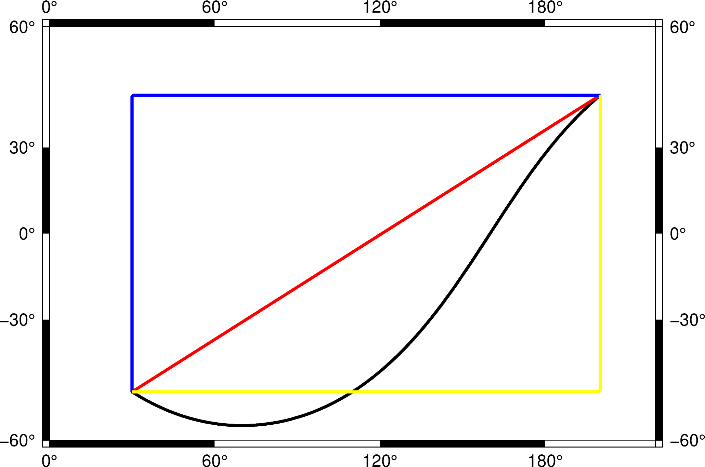
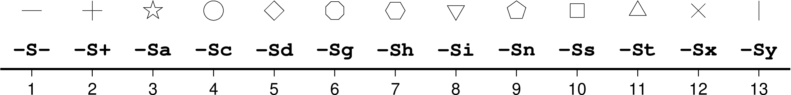
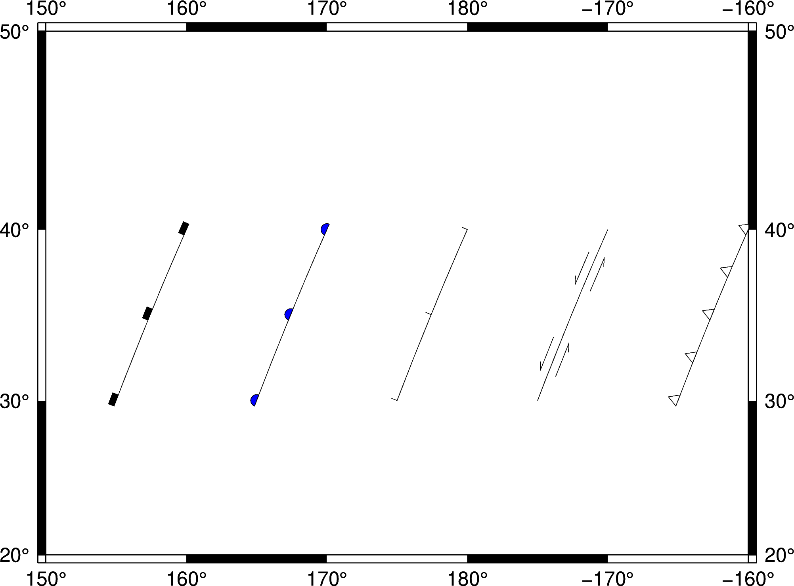
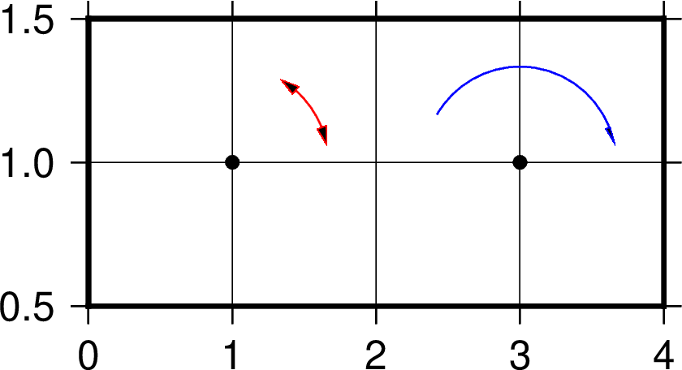
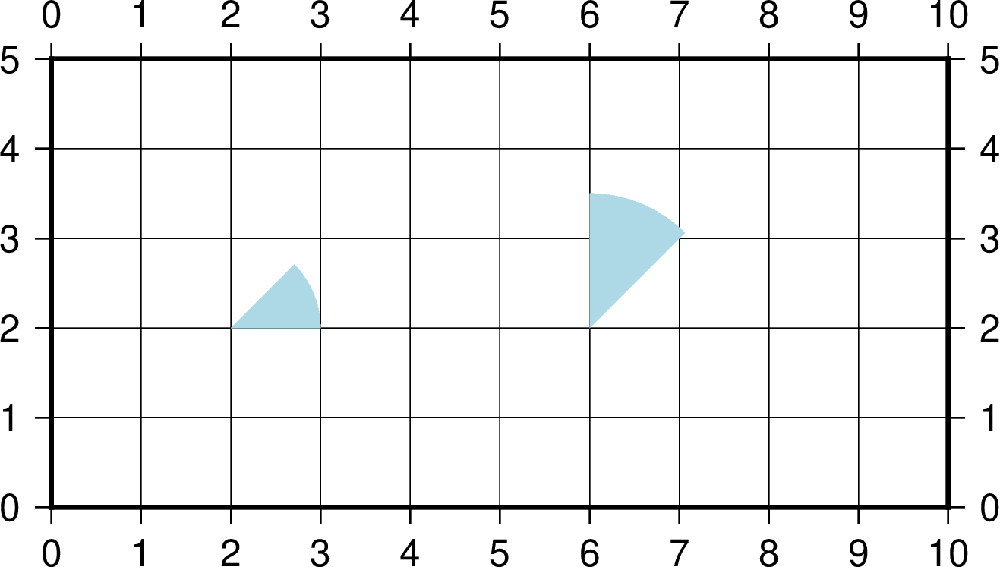

plot¶
| 官方文件: | plot |
|---|---|
| 簡介: | 在圖上繪製線段、多邊形和符號 |
該命令既可以用於畫線段（多邊形可以認爲是閉合的線段）也可以用於畫符號，唯一的區別在於是否使用了 -S 選項。在不使用 -S 選項的情況下，默認會將所有的數據點連成線，使用 -S 選項則僅在數據點所在位置繪製符號。
可選選項¶
-A[m|p|x|y]修改兩點間的連接方式。
地理投影下，兩點之間默認沿着大圓弧連接。
-A：忽略當前的投影方式，直接用直線連接兩點-Am：先沿着經線畫，再沿着緯線畫-Ap：先沿着緯線畫，再沿着經線畫
笛卡爾座標下，兩點之間默認用直線連接。
-Ax先沿着X軸畫，再沿着Y軸畫-Ay先沿着Y軸畫，再沿着X軸畫
下圖中，黑色曲線爲默認情況；紅線爲使用
-A的效果；藍線爲使用-Ap的效果；黃線爲使用-Am的效果：plot -A選項示意圖
注：由於這裏投影比較特別，所以沿着經線的線和沿着緯線的線，看上去都是直線，在其他投影方式下可能不會是這樣。
-C<cpt>指定CPT文件或顏色列表
該選項後跟一個CPT文件名，也可以使用
-C<color1>,<color2>,...語法在命令行上臨時構建一個顏色列表，其中<color1>對應Z值爲0的顏色，<color2>對應Z值爲1的顏色，依次類推。- 若繪製符號（即使用
-S選項），則符號的填充色由數據的第三列Z值決定，其他數據列依次後移一列 - 若繪製線段或多邊形（即未使用
-S選項），則需要在多段數據的頭段中指定-Z<val>，然後從cpt文件中查找<val>所對應的顏色，以控制線段或多邊形的線條顏色
下面的例子展示了
-C<color1>,<color2>..用法:gmt plot -JX10c/10c -R0/10/0/10 -B1 -Cblue,red -W2p -png test << EOF > -Z0 1 1 2 2 > -Z1 3 3 4 4 EOF
- 若繪製符號（即使用
-D<dx>/<dy>設置符號的偏移量。
該選項會將要繪製的符號或線段在給定座標的基礎上偏移
<dx>/<dy>距離。若未指定<dy>，則默認dy=dx。-E[x|y|X|Y][+a][+cl|f][+n][+w<cap>][+p<pen>]繪製誤差棒。
默認會繪製X和Y兩個方向的誤差棒。
x|y表示只繪製X方向和/或Y方向的誤差棒，此時輸入數據的格式爲（具體格式由選項決定）:X Y [size] [X_error] [Y_error] [others]
例如，X方向誤差爲1:
echo 5 5 1 | gmt plot -R0/10/0/10 -JX10c/10c -B1 -Sc0.1c -Ex -W2p -png test
X方向誤差爲1，Y方向誤差爲0.5:
echo 5 5 1 0.5 | gmt plot -R0/10/0/10 -JX10c/10c -B1 -Sc0.1c -Exy -W2p -png test
使用
+a表示X方向和/或Y方向爲非對稱誤差棒，此時輸入數據的格式爲:X Y [size] [X_left_error X_right_error] [Y_left_error Y_right_error] [others]
例如:
echo 5 5 1 0.4 0.5 0.25 | gmt plot -R0/10/0/10 -JX10c/10c -B1 -Sc0.1c -Exy+a -W2p -png test
使用
X和Y則繪製box-and-whisker（即stem-and-leaf）符號。以-EX爲例，此時數據數據格式爲:X中位數 Y 0%位數 25%位數 75%位數 100%位數
25%到75%之間的方框內可以用
-G選項填充顏色:echo 5 5 4 4.25 5.4 7 | gmt plot -R0/10/0/10 -JX10c/10c -B1 -Sc0.1c -EX -Gred -W2p -png test
- 若使用
-EXY，則輸入數據中至少需要10列； - 若在X或Y後加上了
+n，則需要在額外的第5列數據指定中位數的不確定性。 +w<cap>控制誤差棒頂端帽子的長度，默認值爲7p+p<pen>控制誤差棒的畫筆屬性，默認值爲defalut,black,solid- 在使用
-C選項時，可以從CPT文件中查找到符號所對應的顏色+c表明將顏色應用於符號填充色和誤差棒畫筆屬性+cf表明僅將顏色用於填充符號+cl表面僅將顏色用於設置誤差棒畫筆屬性，並關閉符號填充色
- 若使用
-F[c|n|r][a|f|s|r|<refpoint>]修改數據點的分組和連接方式。
數據的分組方式有三種：
a忽略所有數據段頭記錄，即將所有文件內的所有數據點作爲一個單獨的組，並將第一個文件的第一個數據點作爲該組的參考點f將每個文件內的所有點分在一個組，並將每一組內的第一個點作爲該組的參考點s每段數據內的點作爲一組，並將每段數據的第一個點作爲該組的參考點r每段數據內的點作爲一組，並將每段數據的第一個點作爲該組的參考點，每次連線後將前一個點作爲新的參考點，該選項僅與-Fr連用（似乎與-Fcs等效？）<refpoint>指定某個點爲所有組共同的參考點
在確定分組後，還可以額外定義組內各點的連接方式：
c將組內的點連接成連續的線段r將組內的所有點與組內的參考點連線n將每個組內的所有點互相連線
在不使用
-F選項的情況下，默認值爲-Fcs。該選項的具體示例在後面給出。-G<fill>- 設置符號或多邊形的填充色。多段數據中數據段頭記錄中的
-G選項會覆蓋命令行中的設置。 -I<intens>模擬光照效果
<intens>的取值範圍爲-1到1，用於對填充色做微調以模擬光照效果。正值表示亮色，負值表示暗色，零表示原色。-L[+b|d|D][+xl|r|<x0>][+yl|r|<y0>][+p<pen>]構建閉合多邊形。
默認情況下，plot只將數據點連起來，若首尾兩個點不相同，則不會形成閉合多邊形。使用 -L 則自動將數據的首尾兩個點連起來，形成閉合多邊形。
除了簡單的首尾相連之外，還可以給線段加上包絡線（類似於線段的誤差）：
+dbuild symmetrical envelope around y(x) using deviations dy(x) given in extra column 3+Dbuild asymmetrical envelope around y(x) using deviations dy1(x) and dy2(x) from extra columns 3-4.+bbuild asymmetrical envelope around y(x) using bounds yl(x) and yh(x) from extra columns 3-4.+xl|r|<x0>connect first and last point to anchor points at either xmin, xmax, or x0+yb|t|<y0>connect first and last point to anchor points at either ymin, ymax, or y0.
Polygon may be painted (-G) and optionally outlined by adding +ppen [no outline].
-N[r|c]區域範圍外的符號不會被裁剪，而會被正常繪製。
默認情況下，位於
-R範圍外的符號不會被繪製的。使用該選項使得即便符號的座標位於-R指定的範圍外，也會被繪製。需要注意的是，該選項對線段或多邊形無效，線段和多邊形總會被區域的範圍裁剪。對於存在週期性的地圖而言，若符號出現在重複邊界上，則會被重複繪製兩次。比如:
gmt plot -R0/360/-60/60 -JM10c -Bx60 -By15 -Sc2c -png test << EOF 360 0 EOF
會在地圖的左右邊界處分別兩個半圓，該行爲可以通過
-N選項修改：-N關閉裁剪，符號僅繪製一次-Nr關閉裁剪，但符號依然繪製兩次-Nc不關閉裁剪，但符號僅繪製一次
-W[<pen>][<attr>]設置線段或符號輪廓的畫筆屬性。
{kind=link}
- -U[label][+c][+jjust][+odx/dy] (more …)
- 在图上绘制GMT时间戳logo
- -t[transp] (more …)
- 设置图层透明度（百分比）。取值范围为0（不透明）到100（全透明）
-S 選項¶
使用 -S 選項，則表示要繪製符號。 -S 選項的基本語法是:
-S[<symbol>][<size>[<u>]]
其中 <symbol> 指定了符號類型， <size> 爲符號的大小， <u> 爲 <size> 的單位。
不同的符號類型，需要的輸入數據格式也不同，但可以統一寫成（用 ... 代表某符號特有的輸入列）:
X Y ...
-S-|+|a|c|d|g|h|i|n|s|t|x|y|p繪製一些簡單的符號。
這幾個符號比較簡單，輸入數據中不需要額外的列：
-S-：短橫線，<size>是短橫線的長度；-S+：加號，<size>是加號的外接圓的直徑；-Sa：五角星（star），<size>是外接圓直徑；-Sc：圓（circle），<size>爲圓的直徑；-Sd：菱形（diamond），<size>爲外接圓直徑；-Sg：八邊形（octagon），<size>爲外接圓直徑；-Sh：六邊形（hexagon），<size>爲外接圓直徑；-Si：倒三角（inverted triangle），<size>爲外接圓直徑；-Sn：五邊形（pentagon），<size>爲外接圓直徑；-Sp：點，不需要指定<size>，點的大小始終爲一個像素點；-Ss：正方形（square），<size>爲外接圓直徑；-St：三角形（triangle），<size>爲外接圓直徑；-Sx：叉號（cross），<size>爲外接圓直徑；-Sy：短豎線，<size>爲短豎線的長度；
對於小寫符號
acdghinst，<size>表示外接圓直徑；對於大寫符號ACDGHINST，<size>表示符號的面積與直徑爲<size>的圓的面積相同。下圖給出了上面所給出的symbol所對應的符號：
plot -S選項示意圖
除了上述簡單的符號之外，還有更多複雜的符號。
-Sb|B[<size>[<u>]][b[<base>]]繪製垂直bar。
-Sb用於在X座標處繪製一個從<base>到Y位置的垂直bar。<size>是bar寬度，其單位可以是長度單位c|i|p，也可以用u表示X方向單位- 若不指定
b<base>，其默認值爲ymin - 指定
b<base>，爲所有數據點指定base值 - 加上
b但未指定<base>，則需要額外的一列數據來指定base的值 -SB與-Sb類似，區別在於-SB繪製水平bar
gmt plot -R0/10/0/5 -JX15c/5c -B1 -Sb1cb -png test << EOF 2 3 1 0.5 4 2 1 1.5 8 4 1 2.5 EOF
-Se|E繪製橢圓
-Se用於繪製橢圓。對於橢圓而言，<size>是不需要的。此時輸入數據的格式爲:X Y 方向 長軸長度 短軸長度
其中方向是相對於水平方向逆時針旋轉的角度，兩個軸的長度都使用長度單位，即
c|i|p-SE選項與-Se類似，區別在於：- 第三列爲方位角（相對於正北方向旋轉的角度）。該角度會根據所選取的地圖投影變換成角度
- 對於線性投影，長短軸的長度單位爲數據單位，即與
-R中數據範圍的單位相同 - 對於地理投影，長軸和短軸的長度單位爲千米，且不可更改
用長度單位指定一個橢圓:
echo 180 0 45 5c 3c | gmt plot -R0/360/-90/90 -JN15c -B60 -Se -png test
線性投影下
-SE的長短軸的單位爲數據單位:echo 180 0 45 300 100 | gmt plot -R0/360/-90/90 -JX10c -B60 -SE -png test
地理投影下
-SE的長短軸的單位是地理單位，默認長度單位爲千米:echo 80 0 45 22200 11100 | gmt plot -R0/360/-90/90 -JN15c -B60 -SE -png test echo 80 0 45 200d 100d | gmt plot -R0/360/-90/90 -JN15c -B60 -SE -png test2
若長短軸長度相等，則橢圓退化成圓，可以用於繪製直徑以千米爲單位的圓，從而解決了
-Sc只能用長度單位而不能用距離單位畫圓的不足。這一特性可以用於繪製等震中距線。比如如下命令可以繪製30度等震中距線:echo 80 0 0 60d 60d | gmt plot -R0/360/-90/90 -JN15c -B60 -SE -png test
上面示例的輸入數據中，方向和短軸長度都是多餘的，所以GMT提供了
-SE-[<size>]選項用於繪製直徑爲<size>的圓，若未指定<size>，則需要在數據中指定圓的直徑。比如30度和60度等震中距線可以用如下命令繪製:gmt plot -R0/360/-90/90 -JN15c -B60 -SE- -png test << EOF 180 0 60d 180 0 120d EOF
-Sf<gap>[/<size>][+l|+r][+b+c+f+s+t][+o<offset>][+p[<pen>]]繪製front，即在線段上加上符號以表示斷層等front
<gap>線段上符號之間的距離，若<gap>爲負值，則解釋爲線段上符號的個數<size>爲符號大小- 若省略了
<size>，則默認爲<gap>的30% - 若
<gap>爲負值，則<size>是必須的
- 若省略了
+l和+r分別表示將符號畫在線段的左側還是右側，默認是繪製在線段中間+b符號爲box+c符號爲circle+t符號爲triangle+f符號表示斷層（fault），默認值。+s符號表示斷層的滑動（slip），用於表示左旋或右旋斷層。其可以接受一個可選的參數來控制繪製矢量時的角度。也可以用+S繪製一個弧形箭頭+o<offset>將線段上的第一個符號相對於線段的起點偏離<offset>距離，默認值爲0- 默認符號的顏色與線段顏色相同（
-W選項），可以使用+p<pen>爲符號單獨指定顏色，也可以使用+p，即不繪製符號的輪廓。
下面的例子分別繪製了
+b、+c、+f、+s、+t所對應的符號：#!/bin/bash gmt begin plot_-Sf pdf,png gmt basemap -R150/200/20/50 -JM15c -B10 gmt plot -Sf2c/0.1i+l+b -Gblack -W << EOF 155 30 160 40 EOF gmt plot -Sf2c/0.1i+l+c -Gblue -W << EOF 165 30 170 40 EOF gmt plot -Sf2c/0.1i+l+f -Gred -W << EOF 175 30 180 40 EOF gmt plot -Sf2c/0.3i+l+s+o1 -Gyellow -W << EOF 185 30 190 40 EOF gmt plot -Sf1c/0.1i+l+t -Gwhite -W -B10 << EOF 195 30 200 40 EOF gmt end
plot -Sf示意圖
-Sj|J繪製旋轉矩形
其輸入數據爲:
X Y 方向 X軸長度 Y軸長度
方向爲相對於水平方向逆時針旋轉的角度。
-SJ與-Sj類似，區別在於：- 輸入的第三列是方位角
- 對於地理投影，X軸和Y軸長度的單位爲地理單位，默認爲 km
- 對於線性投影，X軸和Y軸長度的單位與
-R選項中數據範圍的單位相同
若矩形的長寬相等，則矩形退化成正方形，此時可以使用
-SJ-<size>。<size>是正方形的長度，若未指定<size>則需要在輸入數據的第三列指定長度。-Sk<name>/<size>繪製自定義的符號。
GMT支持自定義符號，該選項會依次在當前目錄、
~/.gmt、$GMT_SHAREDIR/custom目錄中尋找自定義符號的定義文件<name>.def。定義文件中的符號默認其大小爲1，然後會根據<size>對其進行縮放。關於如何自定義符號，見中文手冊。-Sl<size>+t<string>+j<justify>繪製文本字符串
該選項的功能與 text 類似，不知道爲何要設計這個選項。
<size>文本串的大小+t<string>指定文本串+j<justify>修改文本串的對齊方式，默認爲CM
-Sm|M<size>繪製數學圓弧
輸入數據的格式爲:
X Y radius_of_arc start_direction stop_direction
<size>爲矢量箭頭的長度- 圓弧的線寬由
-W選項設定 -SM選項與-Sm完全相同，只是當圓弧的夾角恰好是90度是，-SM會用直角符號來表示- 圓弧的兩端可加上額外的箭頭，見 繪製矢量/箭頭 一節
#!/bin/bash gmt begin plot_-Sm pdf,png gmt basemap -R0/4/0.5/1.5 -JX6c/3c -Bxa1g1 -Bya0.5g0.5 -BWSen gmt plot -Sc0.15c -Gblack << EOF 1 1 3 1 EOF gmt plot -Sm0.2c+b+e+g -Gblack -W0.5p,red << EOF 1 1 1 10 60 EOF gmt plot -Sm0.2c+b+l -Gblack -W0.5p,blue << EOF 3 1 1 10 150 EOF gmt end
plot -Sm 示意圖
-Sq[<type>]<info>[:<labelinfo>]繪製quoted lines，即帶標註的線段，比如等值線、帶斷層名的斷層線等
<type>有6種可選的方式：d<dist>[<u>]/[<frac>]指定標籤之間的距離，單位<u>爲c|i|p；<frac>表示將第一個標籤放在距離quoted lines起點<frac>*<dist>處D<dist>[<u>]/[<frac>]指定標籤之間的距離，單位<u>可以取e|f|k|M|n|u|d|m|sf<ffile.d>根據ASCII文件<ffile.d>的內容確定標籤的位置。僅當<ffile.d>中指定的標籤位置與quoted lines上數據點的位置完全匹配時纔會被繪製l<line1>[,<line2>,...]指定一個或多個以逗號分隔的線段，標籤會放在線段與quoted line相交的地方。<line>的格式爲start_lon/start_lat/stop_lon/stop_lat，其中start_lon/start_lat以及stop_lon/stop_lat可以用錨點中的兩字符替換。L<line1>[,<line2>,...]與l類似，只是將線段解釋爲兩點之間的大圓路徑n<n_label>指定等間隔標籤的數目，見官方文件N<n_label>見官方文件s<n_label>見官方文件S<n_label>見官方文件x<xfile.d>見官方文件X<xfile.d>見官方文件
<labelinfo>用於控制標籤的格式，其可以是下面子選項的任意組合，詳情見官方文件：+a<angle>+c<dx>/<dy>+d+e+f<font>+g<color>+j<just>+l<label>+L<label>+n<dx>/<dy>+o+p<pen>+r<min_rad>+t[<file>]+u<unit>+v+w+x[<first>,<last>]
- -Sr[+s]
繪製矩形
使用 -Sr 時無需指定 size，其輸入格式爲:
X Y X軸長度 Y軸長度
若加上 +s 選項，則輸入數據分別爲矩形的兩個對角頂點的X和Y座標。
-SR繪製圓角矩形
<size>對該符號無用。其輸入格式爲:X Y X軸長度 Y軸長度 圓角半徑
-Sv|V|=繪製矢量
-Sv用於繪製矢量，輸入數據格式爲:X Y 方向 長度
<size>爲矢量箭頭的長度- 矢量寬度由
-W控制 - 更多箭頭的屬性見 繪製矢量/箭頭 一節
-SV與-Sv類似，區別在於第三列是方位角而不是方向-S=與-SV類似，區別在於第四列長度的單位是地理單位
echo 2 2 45 5c | gmt plot -R0/10/0/10 -JX10c/10c -B1 -Sv1c+e -W2p -png test
-Sw|W[+a|+r]繪製楔形餅圖（pie wedge），即餅圖中的一個切片。加上
+a表示只繪製弧線，+r表示只繪製徑向線。楔形餅圖所需要的輸入數據格式爲:
X Y start_direction stop_direcrion
<size>是楔形餅圖所對應的圓的直徑- 對於
-Sw，第三、四列是楔形的開始和結束方向，其中方向定義爲相對於 X軸正方向（即東向）逆時針旋轉的角度 - 對於
-SW，第三、四列是楔形的開始和結束方位角，其中方位角定義爲相對於北向順時針旋轉的角度。對於地理楔形而言，<size>代表徑向地理距離而不是
下面的示例分別用
-SW和-Sw畫了兩個不同大小的楔形餅圖：#!/bin/bash gmt begin plot_-Sw pdf,png gmt basemap -R0/10/0/5 -Jx1c -Ba1g1 gmt plot -Sw2c -Glightblue << EOF 2 2 0 45 EOF gmt plot -SW3c -Glightblue << EOF 6 2 0 45 EOF gmt end
plot -Sw示意圖。
左邊-Sw，右邊-SW；圖中1格表示1cm。
-S~[d|D|f|l|L|n|N|s|S|x|X]<info>[:<symbolinfo>]- 繪製decorated line，即帶有符號的線段。詳見官方文件。
{kind=link}
{kind=link}
{kind=link}
{kind=link}
輸入數據格式¶
-S 選項相對複雜，與不同的選項連用，或者後面接不同的參數，所需要的輸入數據的格式也不同。不管是什麼符號，至少都需要給定符號的位置，即X和Y是必須的:
X Y
不同的符號，可能還需要額外的信息，統一寫成（用 ... 代表某符號特有的輸入列）:
X Y ...
若 -S 指定了符號類型但未指定大小，即 -S<symbol> ，若該符號類型需要指定大小，則需要將符號大小放在輸入數據的第三列，其他輸入數據的列號延後，此時數據格式爲:
X Y size ...
若size<=0，則跳過該記錄行。
若 -S 選項後未指定符號代碼，則符號代碼必須位於輸入文件的最後一列
X Y ... symbol
若使用了 -C 和 -S 選項，則符號的填充色由數據的第三列決定，其他字段依次後移:
X Y [Z] ... symbol
因而總結一下輸入數據的格式爲:
x y [Z] [size] ... [symbol]
其中 ... 爲某些符號所要求的特殊的數據列， symbol 是未指定符號時必須的輸入列， size 是未指定大小時的輸入列。
多段數據¶
對於多段數據而言，每段數據的頭段記錄中都可以包含一些選項，以使得不同段數據擁有不同的屬性。頭段記錄中的選項會覆蓋命令中選項的參數：
-Gfill：設置當前段數據的填充色-G-：對當前數據段關閉填充-G：恢復到默認填充色-W<pen>：設置當前段數據的畫筆屬性-W：恢復到默認畫筆屬性MAP_DEFAULT_PEN-W-：不繪製輪廓-Z<zval>：從cpt文件中查找Z值<zval>所對應的顏色作爲填充色-ZNaN：從cpt文件中獲取NaN顏色
示例¶
最簡單的命令，繪製線段或多邊形，此時數據輸入需要兩列，即X和Y:
gmt plot -R0/10/0/10 -JX10c -B1 -png test << EOF
3 5
5 8
7 4
EOF
下面的腳本展示了 -F 選項的用法：
#!/bin/bash
# 此处定义了函数plotpts，用于绘制图中绿色和蓝色的圆圈，并加上文字
function plotpts
{
# Plots the two data tables and places given text
gmt plot -Sc0.2c -Ggreen -Wfaint t1.txt
gmt plot -Sc0.2c -Gblue -Wfaint t2.txt
echo $* | gmt text -F+cTL+jTL+f12p -Dj0.05i
}
# 生成测试用的第一个数据文件
cat << EOF > t1.txt
10 10
48 15
28 20
>
40 40
30 5
5 15
EOF
# 生成测试用的第二个数据文件
cat << EOF > t2.txt
7 20
29 11
8 4
EOF
# -Fcs: 默认的连接方式
gmt begin plot_-F pdf,png
gmt basemap -R0/50/0/45 -Jx0.06i -Ba10 -BWSne
gmt plot -W1p t[12].txt
plotpts TWO DATA TABLES
# -Fra
gmt plot -W1p t[12].txt -Fra -X3.25i
plotpts DATASET ORIGIN
# -Frf
gmt plot -W1p t[12].txt -Frf -X-3.25i -Y3.15i
plotpts TABLE ORIGIN
# -Frs
gmt plot -W1p t[12].txt -Frs -X3.25i
plotpts SEGMENT ORIGIN
# -Fr10/35
gmt plot -W1p t[12].txt -Fr10/35 -X-3.25i -Y3.15i
plotpts FIXED ORIGIN
echo 10 35 | gmt plot -Sa0.4c -Gred -Wfaint
# -Fna
gmt plot -W1p t[12].txt -Fna -X3.25i
plotpts NETWORK
gmt end
rm t[12].txt
{kind=link}
plot -F選項示意圖
-L 選項的示例：
#!/bin/bash
cat << EOF > t.txt
1 1
2 3
3 2
4 4
EOF
gmt begin plot_-L pdf,png
gmt basemap -R0/5/0/5 -JX3i -B0
gmt plot t.txt -Gred -W2p -L+xl
gmt plot t.txt -Gred -W2p -L+xr -X3.25i
gmt plot t.txt -Gred -W2p -L+x4.5 -X3.25i
gmt plot t.txt -Gred -W2p -L+yt -X-6.5i -Y3.25i
gmt plot t.txt -Gred -W2p -L+yb -X3.25i
gmt plot t.txt -Gred -W2p -L+y4 -X3.25i
gmt end
rm t.txt
{kind=link}
plot -L選項示意圖